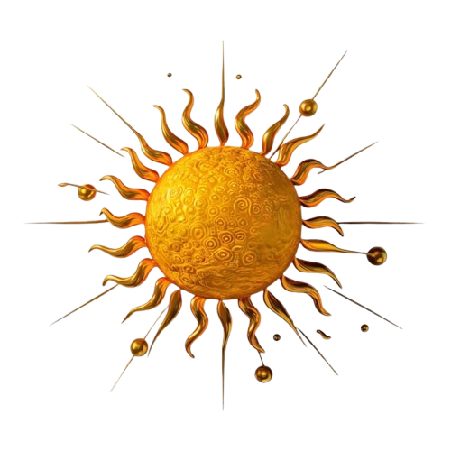
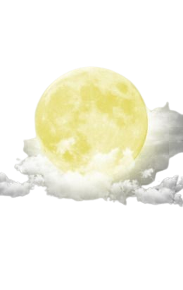

SKY
CLOUD

Awan adalah kumpulan tetesan air atau kristal es kecil yang melayang di atmosfer, tercipta saat uap air naik, mendingin, dan mengembun di sekitar partikel kecil seperti debu, membentuk berbagai bentuk dan jenis yang menghiasi langit dengan keindahan dan fungsi pentingnya dalam mengatur cuaca serta menjaga siklus air di Bumi.
SUN
Matahari adalah bola raksasa gas pijar yang terdiri dari hidrogen dan helium, memancarkan energi luar biasa melalui reaksi fusi nuklir di intinya, menjadi sumber kehidupan utama di Bumi dengan memberikan cahaya, panas, dan energi yang mendukung ekosistem serta menggerakkan siklus alam seperti fotosintesis, angin, dan cuaca.
MOON
Bulan adalah satelit alami Bumi yang berkilauan dengan cahaya matahari yang dipantulkannya, mengorbit planet kita setiap 27,3 hari, memengaruhi pasang surut laut, memperindah malam dengan wajah purnamanya, dan menjadi saksi bisu dari sejarah alam semesta yang menginspirasi imajinasi manusia sejak zaman kuno.